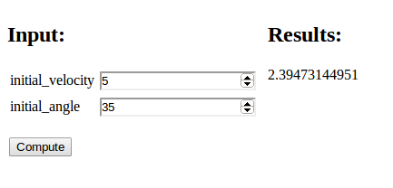
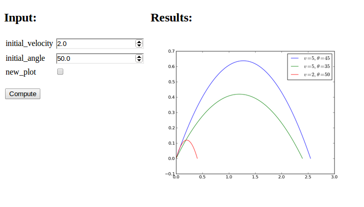
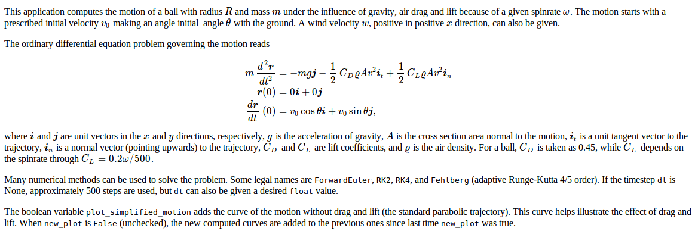

User interfaces for Python functions
Parampool can automatically generate user interfaces for communicating with a given function. The usage of this functionality will be explained in problems of increasing complexity, using the trajectory of a ball as described above as application.
Real numbers as input and output
Suppose you have some function
def compute_drag_free_landing(initial_velocity, initial_angle):
...
return landing_point
This function returns the landing point on
the ground (landing_point) of a ball that is initially thrown with a
given velocity in magnitude (initial_velocity), making
an angle (initial_angle) with the ground. There are two real input
variables and one real output variable. The function must be available
in some module, here the module is simply called compute.py (and
it also contains a lot of other functions for other examples).
In the following we shall refer to functions like compute_drag_free_landing,
for which we want to generate a web interface, as a compute function.
Flask interface
Flask is a tool that can be used to write
a graphical user interface (GUI) to be operated in a web browser. Here
we shall use Flask to create a GUI for our compute function, as
displayed in Figure 1. To this end, simply create a
Python file generate.py with the following lines:
from parampool.generator.flask import generate
from compute import compute_drag_free_landing
generate(compute_drag_free_landing, default_field='FloatField')
The generate function grabs the arguments in our compute function and
creates the necessary Flask files.
Figure 1: A simple web interface.

compute module you must copy compute.py to
the directory or modify PYTHONPATH to contain the path to the
directory where compute.py resides.
Since the generate tool has no idea
about the type of variable of the two positional arguments in the
compute function, it has to assume some type. By default this will
be text, but we can change that behavior to be floats by the setting the
default_field argument to FloatField.
This means that the generated interface
will (only) accept float values for the input variables, which is
sufficient in our case.
A graphical Flask-based web interface is generated by running
Terminal> python generate.py
controller.py file and do some explicit
conversion of text read from the web interface to the actual variable
type accepted by the compute function. This potential manual work can
be avoided by using keyword arguments only, so the generator
functionalty can see the variable type.
You can now view the generated web interface by running
Terminal> python controller.py
and open your web browser at the location
http://127.0.0.1:5000/. Fill in values for the two input variables
and press Compute. The page in the Chrome browser will now look like Figure
1. Other browsers (Firefox, for instance) may have a
slightly different design of the input fields. All figures in this tutorial
are made with the Chrome browser.
-
model.pywith a definition of the forms in the web interface -
controller.pywhich glues the interface with the compute function -
templates/view.htmlwhich defines the design of the web interface
clean.sh, is also generated: it will remove
all files that were generated by running generate.py.
Django interface
Django is a very widespread and popular
programming environment for creating web applications.
We can easily create our web application in Django too. Just replace flask
by django in generate.py:
from parampool.generator.django import generate
from compute import compute_drag_free_landing
generate(compute_drag_free_landing, default_field='FloatField')
The Django files are now in the directory tree drag_free_landing
(same name as our compute function, except that any leading compute_
word is removed). Run the application by
Terminal> python drag_free_landing/manage.py runserver
and open your browser at the location http://127.0.0.1:8000/.
The interface looks the same and has the same behavior
as in the Flask example above.
drag_free_landing directory tree. The most important
ones are
-
models.pywith a definition of the forms in the web interface -
views.pywhich glues the interface with the compute function -
templates/index.htmlwhich defines the design of the web interface
A plot as output
The result of the previous computation was just a number. Let us instead make a plot of the trajectory of a ball without any air resistance. The function
def compute_drag_free_motion_plot(
initial_velocity=5.0,
initial_angle=45.0):
...
return html_text
is now our compute function, in compute.py, which takes the same two
input arguments as before, but returns some HTML text that will display
a plot in the browser window. This HTML text is basically the inclusion
of the image file containing the plot,
<img src="X">
where X is the name of the file. However, if you do repeated
computations, the name of the image file must change for the browser to
update the plot. Inside the compute function we must therefore generate
a unique name of each image file. For this purpose, we can use the
number of seconds since the Epoch (January 1, 1970) as part of the filename,
obtained by calling time.time(). In addition, the image file must
reside in a subdirectory static. The appropriate code is displayed below.
import matplotlib.pyplot as plt
...
def compute_drag_free_motion_plot(
initial_velocity=5.0,
initial_angle=45.0):
...
plt.plot(x, y)
import time # use time to make unique filenames
filename = 'tmp_%s.png' % time.time()
if not os.path.isdir('static'):
os.mkdir('static')
filename = os.path.join('static', filename)
plt.savefig(filename)
html_text = '<img src="%s" width="400">' % filename
return html_text
The string version of the object returned from the compute function is inserted as Results in the HTML file, to the right of the input. By returning the appropriate HTML text the compute function can tailor the result part of the page to our needs.
Flask application
The generate.py file for this example is similar to what is shown above.
Only the name of the compute function has changed:
from parampool.generator.flask import generate
from compute import compute_drag_free_motion_plot
generate(compute_drag_free_motion_plot)
default_field because we have
used keyword arguments with default values in the compute function.
The generate function can then from the default values see the
type of our arguments. Remember to use float default values
(like 5.0)
and not simply integers (like 5) if the variable is supposed to be a float.
We run python generator.py to generate the Flask files and then
python controller.py to start the web GUI. Now the default
values appear in the input fields. These can be altered, or you can
just click Compute. The computations result in a plot as
showed in Figure 2.
Figure 2: A web interface with graphics.

Django application
The corresponding Django application is generated by the same
generator.py code as above, except that tword flask is replaced
by django. The Django files are
now placed in the drag_free_motion_plot subdirectory, and the web GUI
is started by running
Terminal> python drag_free_motion_plot/manage.py runserver
The functionality of the GUI is identical to that of the Flask version.
Comparing graphs in the same plot
With a little trick we can compare several trajectories in the
same plot: inserting plt.figure(X) makes all plt.plot calls
draw curves in the same figure (with figure number X).
We introduce a boolean parameter
new_plot reflecting whether we want a new fresh plot or not,
def compute_drag_free_motion_plot2(
initial_velocity=5.0,
initial_angle=45.0,
new_plot=True):
and add the following code before the plt.plot call:
global fig_no
if new_plot:
fig_no = plt.figure().number
else:
plt.figure(fig_no)
plt.plot(x, y, label=r'$v=%g,\ \theta=%g$' %
(initial_velocity, initial_angle))
plt.legend()
The new_plot parameter will turn up as a
boolean variable in the web interface, and when checked, we create
a new figure. Otherwise, we draw curves in the existing figure number
fig_no which was initialized last time new_plot was true (with
a global variable we ensure that the value of fig_no survives between
the calls to the compute function).
Figure 3 displays an attempt to not check new_plot
and compare the curves corresponding to three different parameters.
Figure 3: Plot with multiple curves.

new_plot is unchecked before the first computation is carried out,
fig_no is not defined when we do plt.figure(fig_no) and we get
a NameError exception. A fool-proof
solution is
if new_plot:
fig_no = plt.figure().number
else:
try:
plt.figure(fig_no)
except NameError:
fig_no = plt.figure().number
import matplotlib.pyplot as plot
# make plot
from StringIO import StringIO
figfile = StringIO()
plt.savefig(figfile, format='png')
figfile.seek(0) # rewind to beginning of file
figdata_png = figfile.buf # extract string
import base64
figdata_png = base64.b64encode(figdata_png)
html_text = '<img src="data:image/png;base64,%s" width="400">' % \
figdata_png
There is a convenient function parampool.utils.save_png_to_str
performing the statements above and returning the html_text
string:
from parampool.utils import save_png_to_str
# make plot in plt (matplotlib.pyplot) object
html_text = save_png_to_str(plt, plotwidth=400)
With this construction one can very easily avoid plot files and embed the plot directly in the HTML code.
Agg backend.
The Agg backend is created to make PNG files, but it also recognizes other
formats like PDF, PS, EPS and SVG. The backend needs to be set before importing
pyplot or pylab:
import matplotlib as mpl
mpl.use('Agg')
import matplotlib.pyplot as plot
More input parameters and results
It is time to address a more complicated application: we want to compute the trajectory of a ball subject to air drag and lift and compare that trajectory to the one where drag and lift are omitted. We also want to visualize the relative importance between the three forces: gravity, drag, and lift. The lift is caused by spinning the ball.
The function that performs the computations has the following signature:
def compute_motion_and_forces0(
initial_velocity=5.0,
initial_angle=45.0,
spinrate=50.0,
w=0.0,
m=0.1,
R=0.11,
method='RK4',
dt=None,
plot_simplified_motion=True,
new_plot=True
):
and returns a formatted string html_text with two plots organized
as a table. The technique described in the
Avoiding plot files box at the end of Section {pp:plot:output} is
implemented to embed PNG images directly in the HTML code.
Under the plots there is a table of input values and the landing point.
Curves can be accumulated in the plots (new_plot=True), with
the corresponding data added to the table.
A rough sketch of the HTML code returned from the compute
function goes as follows:
<table>
<tr>
<td valign="top">
<img src="data:image/png;base64,iVBORw0KGgoAAAA..." width="400">
</td>
<td valign="top">
<img src="data:image/png;base64,iVBORw0KGgoAAAA..." width="400">
</td>
</tr>
</table>
<center>
<table border=1>
<tr>
<td align="center"> \( v_0 \) </td>
<td align="center"> \( \theta \) </td>
<td align="center"> \( \omega \) </td>
<td align="center"> \( w \) </td>
<td align="center"> \( m \) </td>
<td align="center"> \( R \) </td>
<td align="center"> method </td>
<td align="center"> \( \Delta t \) </td>
<td align="center"> landing point </td>
</tr>
<tr><td align="right"> 5 </td><td align="right"> 45 </td> ...</tr>
<tr><td align="right"> 5 </td><td align="right"> 45 </td> ...</tr>
<tr><td align="right"> 5 </td><td align="right"> 45 </td> ...</tr>
</table>
</center>
Note that we use MathJax syntax for having LaTeX mathematics in the table heading. All details about the computations and the construction of the returned HTML string can be found in the compute.py file.
Figure 4: Web interface with two graphs.

Any doc string of the compute function is copied and typeset verbatim
at the top of the web interface. However, if the text # (DocOnce
format) appears somewhere in the doc string, the text is taken as
DocOnce source code and
translated to HTML, which enables typesetting of LaTeX mathematics and
computer code snippets (with nice pygments formatting).
The documentation of the web interface can therefore be included as a
doc string in the compute function. Here is descriptive doc string
using DocOnce syntax for LaTeX mathematics (equations inside !bt and
!et commands)
and monospace font for Python variables (names in backticks). The
corresponding view in a browser is shown in Figure 5.
"""
This application computes the motion of a ball with radius $R$
and mass $m$ under the influence of gravity, air drag and lift
because of a given spinrate $\omega$. The motion starts with a
prescribed initial velocity $v_0$ making an angle initial_angle
$\theta$ with the ground. A wind velocity $w$, positive in
positive $x$ direction, can also be given.
The ordinary differential equation problem governing the
motion reads
!bt
\begin{align*}
m\frac{d^2\boldsymbol{r}}{dt^2} &= -mg\boldsymbol{j} -
\frac{1}{2}C_D\varrho A v^2\boldsymbol{i}_t +
\frac{1}{2}C_L\varrho A v^2\boldsymbol{i}_n\\
\boldsymbol{r}(0) &= 0\boldsymbol{i} + 0\boldsymbol{j}\\
\frac{d\boldsymbol{r}}{dt}(0) &= v_0\cos\theta\boldsymbol{i} + v_0\sin\theta\boldsymbol{j},
\end{align*}
!et
where $\boldsymbol{i}$ and $\boldsymbol{j}$ are unit vectors in the $x$ and $y$
directions, respectively, $g$ is the acceleration of gravity,
$A$ is the cross section area normal to the motion, $\boldsymbol{i}_t$
is a unit tangent vector to the trajectory, $\boldsymbol{i}_n$ is
a normal vector (pointing upwards) to the trajectory,
$C_D$ and $C_L$ are lift coefficients, and $\varrho$ is the
air density. For a ball, $C_D$ is taken as 0.45, while
$C_L$ depends on the spinrate through $C_L=0.2\omega/500$.
Many numerical methods can be used to solve the problem.
Some legal names are `ForwardEuler`, `RK2`, `RK4`,
and `Fehlberg` (adaptive Runge-Kutta 4/5 order). If the
timestep `dt` is None, approximately 500 steps are used, but
`dt` can also be given a desired `float` value.
The boolean variable `plot_simplified_motion` adds the curve
of the motion without drag and lift (the standard parabolic
trajectory). This curve helps illustrate the effect of drag
and lift. When `new_plot` is `False` (unchecked), the new
computed curves are added to the previous ones since last
time `new_plot` was true.
# (DocOnce format)
"""
Figure 5: Web interface with documentation.

The generate.py code for creating the web GUI goes as in the other examples,
from parampool.generator.flask import generate
from compute import compute_motion_and_forces
generate(compute_motion_and_forces, MathJax=True)
and we start the application as usual by python controller.py. The
resulting web interface appears in Figure 4. The
table shows the sequence of data we have given; starting with the
default values, then turning off the plot_simplified_motion curve
and new_plot, then running two cases with different values for the
wind parameter w. The plot clearly show the influence of drag and
wind against the motion.
compute_motion_and_forces function returns mathematical symbols
in the heading line of the table with data.
MathJax must be enabled in the HTML code for these symbols to be
rendered correctly. This is specified by the MathJax=True argument
to generate. (However, in this particular example MathJax is
automatically turned on since we use DocOnce syntax and mathematics
in the doc string.)
Django interface
As before, the Django interface is generated by importing the function
generate from parampool.generator.django.
A subdirectory motion_and_forces contains the files, and the
Django application is started as shown in previous examples and has the same
functionality as the Flask application.
Other types of function arguments
The generate function will recognize the following different types
of keyword arguments in the compute function:
float, int, bool, str, list,
tuple, numpy.ndarray, name of a file, as well as user-defined class types
(a la MySpecialClass).
Here is a minimalistic example on computing the mean and standard
deviation of data either in an array or in a file (we use the
file if the operator of the web interface assigns a file to filename):
def compute_average(data_array=np.array([1]), filename=None):
if filename is not None:
data = np.loadtxt(os.path.join('uploads', filename))
what = 'file %s' % filename
else:
data = data_array
what = 'data_array'
return """
Data from %s:
<p>
<table border=1>
<tr><td> mean </td><td> %.3g </td></tr>
<tr><td> st.dev. </td><td> %.3g </td></tr>
</table></p>
""" % (what, np.mean(data), np.std(data))
The output is simple, basically two numbers in a table and an intro line.
We write a generate.py file as shown before, but with compute_average
as the name of the compute function. For any argument containing
the string filename it is assumed that the argument represents
the name of a file. The web interface will then feature a button
for uploading the file.
When the applicatin runs, we have two data fields: one for setting an
array with list syntax and one for uploading a file. Clicking on the
latter and uploading an file mydata.dat containing just columns of
numbers, results in the web page displayed in Figure
6. In this case, when a filename was assigned, we
use the data in the file. Alternatively, we can instead fill in the
data array and click Compute, which then will compute the basic
statistics of the assigned data array.
Figure 6: Web interface for uploading a file.